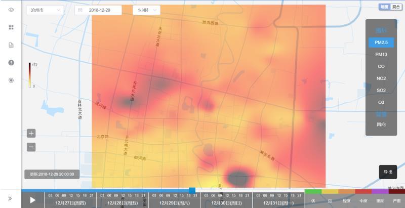

Fine-grained Urban Air Quality Sensing with Mobile Sensing Systems
Introduction
The surveillance of air pollution is becoming a highly concerned issue for city residents and urban administrators. Due to high cost and demanding maintenance, traditional static monitoring stations cannot achieve large coverage and high spatial resolution on air pollution sensing. To address this problem, apart from official air quality stations, we deployed a sensing system which consists of both mobile and static air quality sensors. This system can provide fine-grained urban air quality sensing data and the enable further data mining and learning tasks.
The research problems we are interested in include:
- Data Calibaration Ensuring the system accuracy and stability, minimizing the impact from sensor drift and response delay;
- Reconstruction & Prediction Predicting pollution level at unobserved sptial-temporal coordinates, using scene-specific machine learning methods;
- Pollution Mining Investigating the pollution sources and causes with information metric.
System
At present, real-world experiments have been deployed in several cities in China. We have developed a system that can process real time air pollution data and provide detailed visualization.
 Figure 1. The highly integrated sensors we have developed. This device can provide concentration readings of six air pollutants and send data into cloud using 4G network.
Figure 1. The highly integrated sensors we have developed. This device can provide concentration readings of six air pollutants and send data into cloud using 4G network.
 Figure 2. A data case from Cangzhou, Hebei, China. Our system can provide fine-grained pollution field data compared to traditional static monitoring stations.